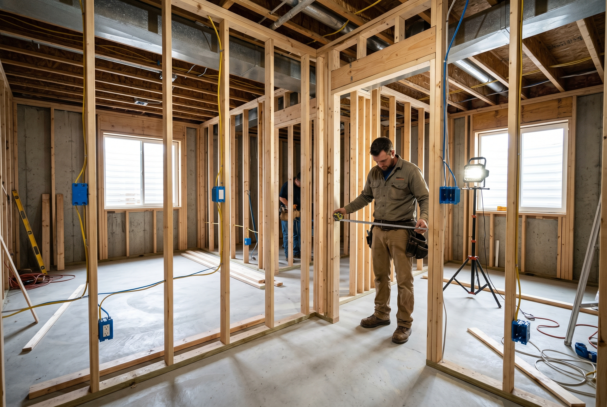
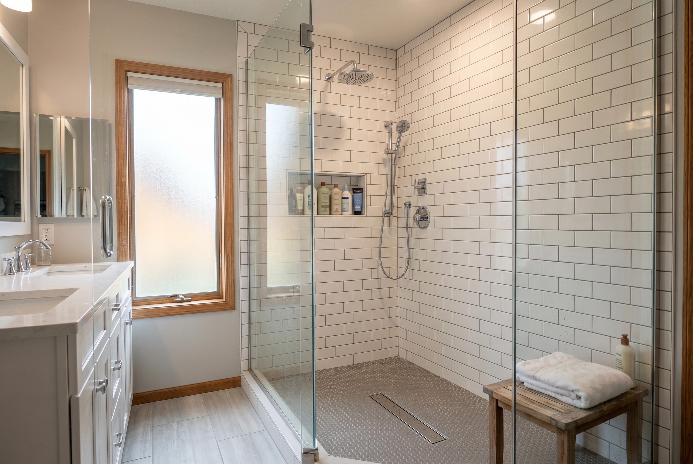

Published September 21, 2026 • By Black Ridge Contracting
Every fall the Cost vs Value Report comes out, the national numbers from Remodeling magazine that show what percentage of a renovation cost recovers on resale. National numbers are useful but they don't always match Iowa. Our local market behaves differently than national averages on a few projects, sometimes better, sometimes worse.
Here are the real numbers we see across Central Iowa in 2026, based on actual projects, what they cost, and what they returned at sale.
The Winners
These projects consistently return more than they cost or close to it.
Interior Paint, Neutral Palette
Cost: $4,000 to $9,000 for a typical 1,800 to 2,400 square foot home.
Recovery: 75 to 100 percent, sometimes more.
Why it works: Fresh neutral paint changes the first 30 seconds of a showing. It's the cheapest, fastest renovation dollar you can spend before listing.
Roof Replacement on an Aging Roof
Cost: $9,000 to $15,000 for a typical Iowa home.
Recovery: 60 to 80 percent, plus removes a buyer objection.
Why it works: A roof under 5 years old removes one of the biggest negotiation points buyers use. Without a new roof, buyers ask for $10,000 to $20,000 off price. With one, they don't.
Basement Finishing With Egress
Cost: $40,000 to $80,000.
Recovery: 70 to 90 percent.
Why it works: Basement finishing adds usable square footage at lower cost per foot than any other addition. Including an egress window means the basement bedroom counts on appraisal.
Minor Kitchen Refresh
Cost: $15,000 to $25,000.
Recovery: Around 70 percent.
Why it works: Cabinet refinishing, counter swap, lighting update, and appliance refresh hits the visible items buyers care about without the cost of a full gut remodel.
Adding a Bathroom Where None Exists
Cost: $20,000 to $35,000 for a half bath, $30,000 to $50,000 for a full.
Recovery: 65 to 75 percent.
Why it works: Going from 1 bath to 2 bath or adding a primary bath where the house never had one removes a major buyer objection. The recovery rate is high because the comp set rewards bath count.

The Middle Ground
These recover most of their cost but rarely all of it.
Window Replacement
Cost: $12,000 to $25,000 for a typical home.
Recovery: 55 to 70 percent.
Why it's middle ground: Helps showings and reduces energy costs but rarely pays for itself in pure sale price.
Siding Replacement
Cost: $15,000 to $30,000.
Recovery: 60 to 75 percent.
Why it's middle ground: Curb appeal and warranty matter to buyers, but siding doesn't generate the appraisal lift of a kitchen or roof.
Full Bath Remodel
Cost: $20,000 to $40,000.
Recovery: 55 to 70 percent.
Why it's middle ground: Updated baths show better but the recovery rate depends on what the original bath looked like.

The Losers
These rarely return their cost on resale.
Full Kitchen Remodel Above $50,000
Recovery: 55 to 65 percent.
Big kitchen remodels are a personal-use renovation, not a resale move. Do it because you want to enjoy it for 5 to 10 years, not to make money on the sale.
Sunroom or Three-Season Room
Recovery: 45 to 55 percent.
Iowa weather makes these underutilized for half the year, which buyers know.
In-Ground Pool
Recovery: Often negative.
Iowa swimming season is short and pools are seen as maintenance burden by most buyers. Pools can actively reduce sale price.
Master Suite Addition
Recovery: 50 to 60 percent.
Adding 200 to 400 square feet of master suite costs $100,000 to $200,000 in Iowa and recovers half. Only worth it for personal enjoyment.
The "It Depends" Category
Some projects depend entirely on neighborhood and condition.
Hardwood floors. If they're under carpet and just need refinishing, $4 to $7 per square foot for one of the highest returns in the renovation world. If you're installing new hardwood over subfloor, the return is closer to 70 percent.
HVAC replacement. If the system is dying anyway, doesn't directly add value at sale but removes a buyer objection and prevents a price reduction. Treat as a necessary cost, not a value-add.
Foundation waterproofing. Doesn't directly add value, but a wet basement actively kills sale price. Fix it before listing.
If the Math Doesn't Work, Sell As-Is
Not every house should be renovated before listing. If the math says you'd recover less than 60 percent on the project you're considering, and you're selling within 12 months, you're probably better off selling as-is and letting the next owner do the work.
The other option is selling directly to an investor. Cash, no contingencies, close in 14 to 30 days. Our wholesaling team at Heberer Homes handles Central Iowa sellers who want to skip the renovation. Offer in 24 hours.
How to Pick the Right Projects for Your Situation
Three questions before any pre-sale renovation:
- Is the project on the Winners list above? Yes, proceed. No, reconsider.
- Does the project address something your specific neighborhood's buyer pool wants? An Ankeny starter home buyer wants different things than a South of Grand buyer.
- Can you complete the work and list within 6 months? Longer than that and you're paying carrying costs that eat into recovery.
If you want a contractor walking through with you to talk through which projects make sense for your specific house and neighborhood, we do it free. See our remodeling services or call (515) 219-4654.
Frequently Asked Questions
Interior paint, recovering 75 to 100 percent. Roof replacement second at 60 to 80 percent. Minor kitchen refresh third at 70 percent.
Minor refreshes under $25,000 recover 70 percent. Full remodels above $50,000 recover 55 to 65 percent, meaning you lose money unless you stay long enough to enjoy it.
Adding a primary bath or going from 1 to 2 baths recovers 65 to 75 percent. Adding a 3rd or 4th bath recovers less than 50 percent.
Basement finishing with egress window, climate control, and a bathroom recovers 70 to 90 percent.